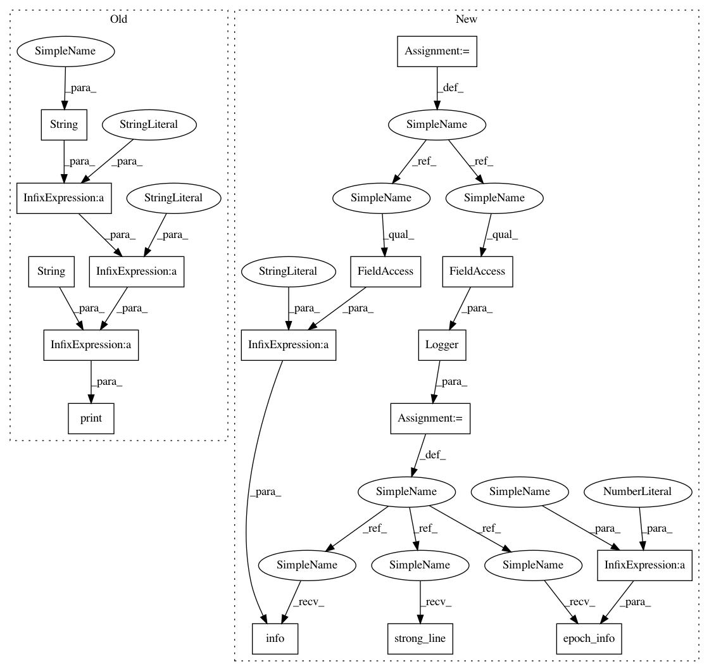

8896f02f94da16afe5b3ea5330e4f99245b75d6b,examples/pendulum_ac.py,,experiment,#Any#Any#,102
Before Change
J = compute_J(dataset_callback.get(), gamma=1.)
dataset_callback.clean()
display_callback()
print("Mean Reward at iteration " + str(i) + ": " +
str(np.sum(J) / n_steps/n_episodes))
print("Press a button to visualize the pendulum...")
input()
core.evaluate(n_steps=n_steps, render=True)
After Change
def experiment(n_epochs, n_episodes):
np.random.seed()
logger = Logger(StochasticAC_AVG.__name__, results_dir=None)
logger.strong_line()
logger.info("Experiment Algorithm: " + StochasticAC_AVG.__name__)
// MDP
n_steps = 5000
mdp = InvertedPendulum(horizon=n_steps)
// Agent
n_tilings = 11
alpha_r = Parameter(.0001)
alpha_theta = Parameter(.001 / n_tilings)
alpha_v = Parameter(.1 / n_tilings)
tilings = Tiles.generate(n_tilings-1, [10, 10],
mdp.info.observation_space.low,
mdp.info.observation_space.high + 1e-3)
phi = Features(tilings=tilings)
tilings_v = tilings + Tiles.generate(1, [1, 1],
mdp.info.observation_space.low,
mdp.info.observation_space.high + 1e-3)
psi = Features(tilings=tilings_v)
input_shape = (phi.size,)
mu = Regressor(LinearApproximator, input_shape=input_shape,
output_shape=mdp.info.action_space.shape)
std = Regressor(LinearApproximator, input_shape=input_shape,
output_shape=mdp.info.action_space.shape)
std_0 = np.sqrt(1.)
std.set_weights(np.log(std_0) / n_tilings * np.ones(std.weights_size))
policy = StateLogStdGaussianPolicy(mu, std)
agent = StochasticAC_AVG(mdp.info, policy,
alpha_theta, alpha_v, alpha_r,
lambda_par=.5,
value_function_features=psi,
policy_features=phi)
// Train
dataset_callback = CollectDataset()
display_callback = Display(agent._V, mu, std,
mdp.info.observation_space.low,
mdp.info.observation_space.high,
phi, psi)
core = Core(agent, mdp, callbacks_fit=[dataset_callback])
for i in trange(n_epochs, leave=False):
core.learn(n_episodes=n_episodes,
n_steps_per_fit=1, render=False)
J = compute_J(dataset_callback.get(), gamma=1.)
dataset_callback.clean()
display_callback()
logger.epoch_info(i+1, R_mean=np.sum(J) / n_steps/n_episodes)
logger.info("Press a button to visualize the pendulum...")
input()
core.evaluate(n_steps=n_steps, render=True)
In pattern: SUPERPATTERN
Frequency: 4
Non-data size: 16
Instances
Project Name: AIRLab-POLIMI/mushroom
Commit Name: 8896f02f94da16afe5b3ea5330e4f99245b75d6b
Time: 2021-01-08
Author: boris.ilpossente@hotmail.it
File Name: examples/pendulum_ac.py
Class Name:
Method Name: experiment
Project Name: AIRLab-POLIMI/mushroom
Commit Name: 8896f02f94da16afe5b3ea5330e4f99245b75d6b
Time: 2021-01-08
Author: boris.ilpossente@hotmail.it
File Name: examples/pendulum_dpg.py
Class Name:
Method Name: experiment
Project Name: AIRLab-POLIMI/mushroom
Commit Name: 60ebba7d23a946b55de9aaa34d08637e42e75d3b
Time: 2021-01-08
Author: boris.ilpossente@hotmail.it
File Name: examples/lqr_bbo.py
Class Name:
Method Name: experiment
Project Name: AIRLab-POLIMI/mushroom
Commit Name: 8896f02f94da16afe5b3ea5330e4f99245b75d6b
Time: 2021-01-08
Author: boris.ilpossente@hotmail.it
File Name: examples/lqr_pg.py
Class Name:
Method Name: experiment
Project Name: AIRLab-POLIMI/mushroom
Commit Name: 8896f02f94da16afe5b3ea5330e4f99245b75d6b
Time: 2021-01-08
Author: boris.ilpossente@hotmail.it
File Name: examples/pendulum_ac.py
Class Name:
Method Name: experiment